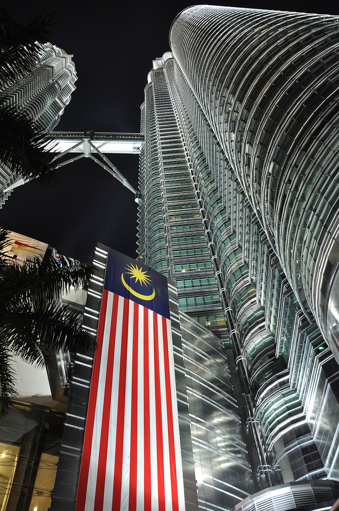
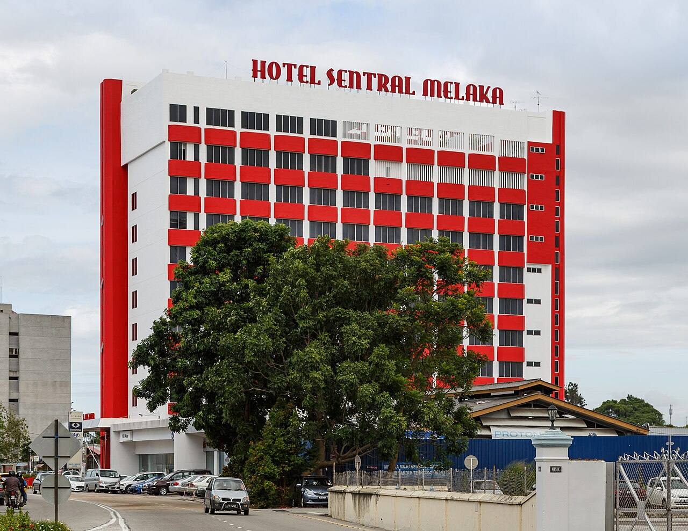
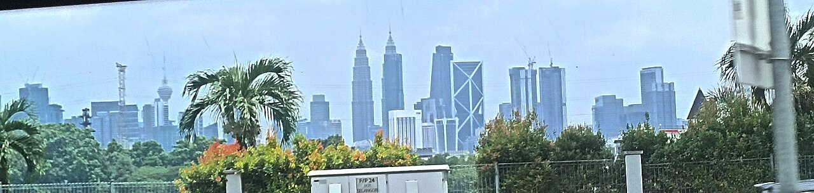
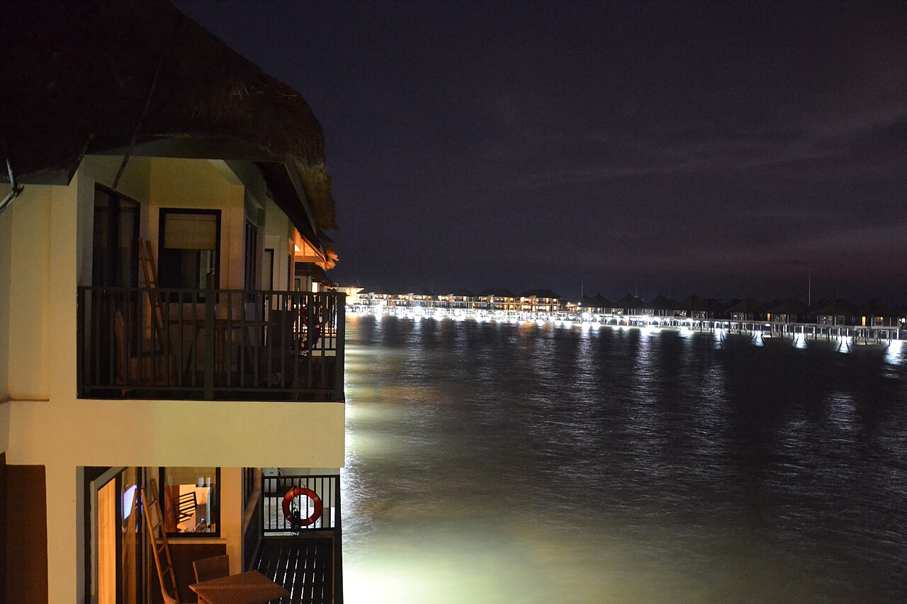

南洋春風裡的
三代同堂慢行手帖
為 3 位成人與 1 位 11 歲孩童（含 63 歲媽媽）量身訂製的安縵式從容步調。全段 4 趟跨城專車直達、午後留白避暑、吉隆坡市中心 60 坪連通大公寓四晚連住，於熱帶繁華中保有家的靜謐與餘裕。
✓ 3/27 Check-in 請櫃檯一次設定 4 張房卡直通 3/31 12:00 PM
• 隨行含 11 歲孩童，入境走「人工家庭通道」查驗紙本 MDAC。
• 全程 4 趟 7–10 人座休旅專車點對點接駁，大行李零搬運。
古城核心・2間標準房（🔴 須預先通知凌晨入住）
60坪雙臥＋單臥連通公寓・冷氣空橋直達雙峰塔
距機場 10 分鐘・16:00 免費瑞士巧克力時光
八日曆帖・單日快速索引
二十大景點、美饌與商場實景圖鑑
全數採用本地化高解析度實景攝影（Wikimedia Commons 認證圖庫），附官方網站與 Google Maps 精準導航座標。
✈️ 直飛航班擬真登機證與出入境憑證
• 23:00 搭乘預訂 7–10 人座休旅專車直奔馬六甲 ibis 補眠。
• 建議出發前於 App 將回程託運行李升級至 30~40kg 以利裝載伴手禮。
Pullman KLCC 櫃檯入住黑金貴賓憑證卡
Guest Name: Mr. YINGYU LU (3 Adults + 1 Child, 11 yrs old)
Confirmed Arrangement (by Reservations SREE & Miki): One Two-Bedroom Apartment strictly interconnected via an inner door to one One-Bedroom Deluxe Apartment (at original booking rate). Do NOT change rooms on 30 Mar.
Breakfast Included: Daily buffet breakfast for 3 Adults and 1 Child is fully included for all 4 mornings (28, 29, 30, 31 Mar).
Keycard Request: Please link both reservations and program 4 keycards valid until 31 Mar 12:00 PM.
三階段雅高集團旅宿與洗衣配置詳解

Day 1–2｜2 晚馬六甲：ibis Melaka（宜必思馬六甲飯店）
249 Jalan Bendahara, Pengkalan Rama, 75100 Melaka｜電話：+60 6-222 8888

Day 3–6｜核心 4 晚連住吉隆坡：Pullman Kuala Lumpur City Centre Hotel & Residences
4, Jalan Conlay, 50450 Kuala Lumpur｜電話：+60 3-2170 8888｜信箱：reservations@pullman-klcc.com
QSHSCNTF (3/27-30，已扣3萬點，待付 MYR 97.45) ＋ QSHSCSTH (3/30-31，已扣1萬點，待付 MYR 32.48) ➔ 3/27 入住現場僅需刷卡 MYR 129.93（約 NT$ 1,018）。1. App 專人到大廳收送（最推）：用
Laundryheap 預約，交給 1 樓禮賓部，洗＋烘＋摺每袋 6kg 僅 RM 36.30（約 NT$ 287）。
2. 飯店 10 樓自助洗衣房（🔴待查證）：入住時詢問櫃檯 10 樓投幣洗衣間是否開放。
3. 帶齊 7 件夏季薄衫：回程託運行李已升級至 30~40kg，直接帶足短袖免洗最輕鬆。

Day 7｜早班機零壓力雪邦機場特區：Mövenpick Hotel & Convention Centre KLIA
Kompleks TH Sepang, Jalan Masjid KLIA, 64000 Sepang｜電話：+60 3-8661 8661
🚐 全程四趟跨城專車與市區 Grab 尊榮乘車指南
針對 3 大 1 小（含 63 歲媽媽）與 3–4 件大行李箱，跨城移動 100% 採用 7–10 人座休旅專車點對點直達，免去拖行李轉乘之苦。
吉隆坡機場 T2 (KUL) ➔ 馬六甲 ibis Melaka
• 華人司機於入境大廳舉牌接機（依 AK171 航班號免費緩衝等待）。
• 全家出關後直接上車閉目養神，直達馬六甲飯店大廳辦理深夜入住。
馬六甲 ibis ➔ 布城粉紅清真寺 ➔ 吉隆坡 Pullman
• 大件行李全程鎖在專車後車廂，全家一身輕便於布城拍湖中倒影與用午餐。
• 15:00 準時抵達吉隆坡 Pullman KLCC 入住 60 坪連通大公寓。
吉隆坡 Pullman ➔ 莫凡彼寄行李 ➔ 三井 Outlet
• 退房後專車南下雪邦，先繞進 Mövenpick 飯店大廳禮賓部卸下所有大行李。
• 隨後原車 3 分鐘送達全室內冷氣「三井 Outlet (MOP)」輕鬆採買。
雪邦 Mövenpick KLIA ➔ 吉隆坡機場 T2 (KUL)
• 前一晚入住時向櫃檯確認 05:15 送機專車（同步開啟 Grab 6人座備援）。
• 05:00 領取 4 份外帶早餐盒上車，05:30 準時抵達 T2 櫃檯從容託運。
GrabCar Plus（車況較新、冷氣強、司機評分高）或 GrabCar 6-Seater（媽媽上下車膝蓋最寬裕）。上車前請再次核對車牌號碼。
🌉 Pullman KLCC 全封閉冷氣空橋・零日曬雨淋動線圖
從 Pullman 飯店 2 樓連通道 步出，直接踏上全封閉冷氣天橋 ➔ 步行 5 分鐘直入 城中城水族館 (Aquaria KLCC) 地下連通道 ➔ 續行直達 Suria KLCC 商場（關媽媽餐廳、國油科學館、雙峰塔水舞廣場）。
從 Pullman 旁天橋入口往南走約 6 分鐘 ➔ 直達 Pavilion 柏威年廣場（Tokyo Street、鼎泰豐）➔ 透過商場內部連通道直通 Starhill 誠品生活（Thai Odyssey 按摩） 與 Lot 10 十號胡同。
前往 The Exchange TRX 時，可從飯店直接叫 Grab（約 6 分鐘），或散步至旁邊的 Conlay 站 (PY22) 搭乘布城線（Putrajaya Line）僅 1 站（2 分鐘） 即抵 Tun Razak Exchange 站 (PY23) 商場連通口。
🎁 大馬精選伴手禮採買清單 vs. 台灣海關檢疫紅綠燈
- • 華陽茶室 (Oriental Kopi) / 鳳凰餅家：盒裝白咖啡、炭燒咖啡、拉茶包、純奶蛋素太陽餅與鳳梨酥（⚠️ 務必確認外盒成分無豬油、無肉鬆）。
- • Beryl's 皇家巧克力（三井 Outlet / Suria KLCC）：提拉米蘇杏仁白巧克力、70% 黑巧克力、草莓巧克力。
- • 馬六甲三叔公伴手禮：陳年老桔乾、純素薩騎馬、椰糖（Gula Melaka）、榴槤晶露冰棒（現場吃）。
- • A1 / 巴生肉骨茶香料包：認明包裝標示「純中藥材與香料（100% Herbs & Spices）」，不含任何肉類萃取或豬骨粉即可攜帶。
- • 追風油 / 豆蔻膏 / 娘惹手工藝：中央市場 (Central Market) 購買之千里追風油、檳城豆蔻膏與峇迪布藝品。
- • 任何含肉製品（含雞肉、豬肉、牛肉）：林明記／美珍香肉乾、含肉鬆之蛋捲／鳳梨酥／香餅、含火腿或肉末之糕餅，一律嚴禁帶回台灣！
- • 含動物油脂之糕點：傳統雞仔餅、部分嫁女餅若成分表含有「豬油 (Lard)」或肉塊，請在馬來西亞當地吃完，切勿帶上飛機。
- • 新鮮水果與植物：新鮮貓山王榴槤、山竹、紅毛丹嚴禁攜帶入境（僅經商業真空冷凍乾燥且無果核之純榴槤乾／榴槤巧克力可攜帶）。
- • 超過 100ml 之液體／咖椰醬 (Kaya)：華陽咖椰醬、辣椒醬、追風油若單瓶超過 100ml，必須放入託運行李箱，不可隨身手提過安檢。
🧮 購物隨身馬幣 (MYR) ⇄ 台幣換算器
💡 商場、餐廳與 Grab 皆可刷信用卡；老街茶室、三輪車與夜市小攤建議備妥 RM 1、RM 5、RM 10 小鈔。